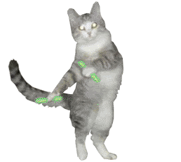

В 1758 году Карлом Линнеем в «Системе природы» домашней кошке было присвоено биномиальное название Felis catus. Иоганн Христиан фон Шребер в 1775 году дал дикой кошке название Felis silvestris.В литературе встречаются и другие названия, используемые в качестве международного научного (латиноязычного) названия домашней кошки: Felis catus domesticus, Felis silvestris domesticus, а также предложенное в 1777 году Иоганном Христианом Поликарпом Эркслебеном в «Началах естествознания» название Felis domesticus (изначально — Felis domestica, поскольку слово Felis в те времена считалось женского рода). В качестве русского названия данного таксона в научной (научно-популярной) литературе используется как выражение «домашняя кошка» (или «кошка домашняя»), так и просто слово «кошка».В 2003 году Международной комиссией по зоологической номенклатуре было принято решение о закреплении за дикой кошкой названия Felis silvestris, а за её одомашненным подвидом — названия Felis silvestris catus, при этом было оговорено, что если в какой-либо классификации домашняя кошка будет описываться как отдельный вид, то в этом случае для названия соответствующего таксона следует использовать комбинацию, предложенную Линнеем, — Felis catus.На основании данных, полученных современной филогенетикой, домашняя кошка является одним из пяти подвидов дикой кошки Felis silvestris, и её правильное международное научное название — Felis silvestris catus. В 2017 году вышла крупная статья, в которой домашняя кошка была выделена в отдельный вид.
